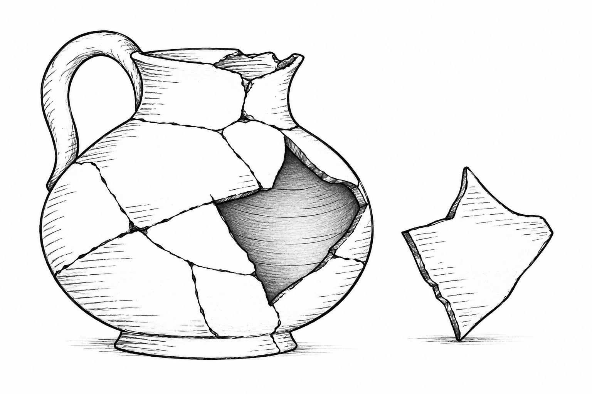
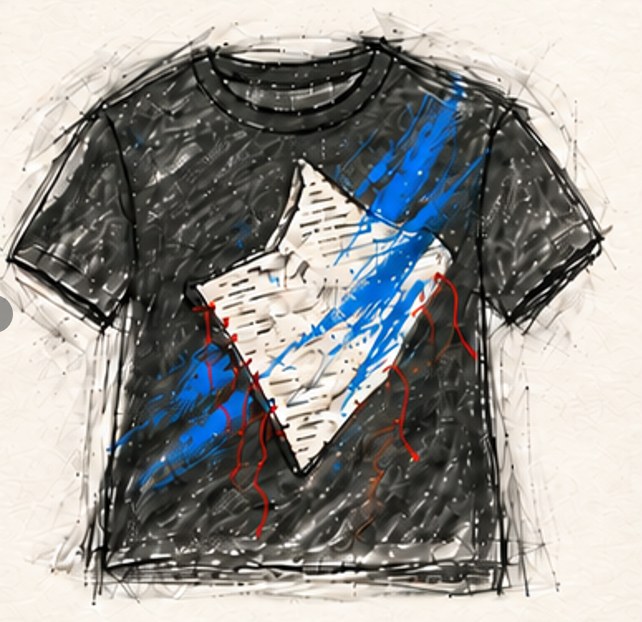
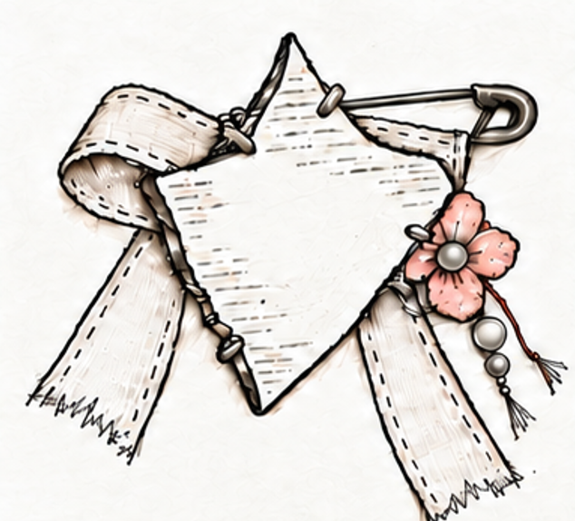

NOTE:
ChatGPT

AI TOOL: CHATGPT
PROMPT (EXCERPT)::
"Turn the pottery shard into a handmade brooch with ribbon, flower and safety pin..."
ITERATIONS: 6
SELECTED: VERSION 02
Midjourney
AI TOOL: MIDJOURNEY
PROMPT (EXCERPT)::
"Reimagine the pottery shard as a small floating garden with moss, flowers and miniature steps..."
ITERATIONS: 8
SELECTED: VERSION 05